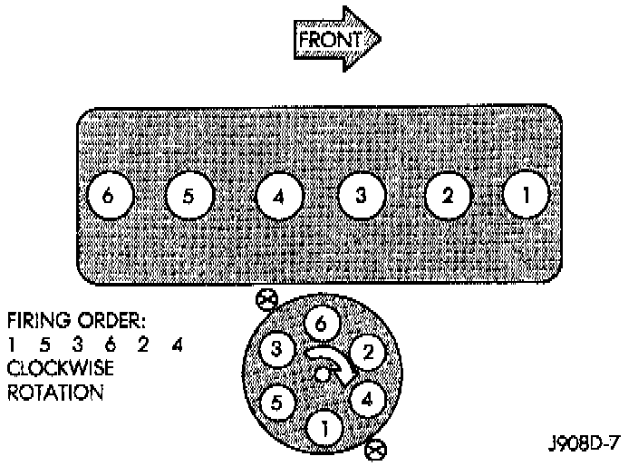
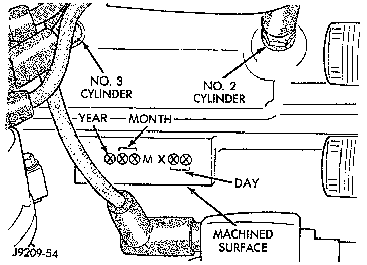

Engine: Description and Operation
DESCRIPTIONThis six-cylinder engine is an in-line, lightweight, overhead valve engine.
TYPE OF FUEL
This engine is designed for unleaded fuel.

FIRING ORDER
The cylinders are numbered 1 through 6 from front to rear. The firing order is 1-5-3-6-2-4.
CRANKSHAFT
The crankshaft rotation is clockwise, when viewed from the front of the engine. The crankshaft rotates within seven main bearings.
CAMSHAFT
The camshaft rotates within four bearings:

BUILD DATE CODE
The engine Build Date Code is located on a machined surface on the right side of the cylinder block between the No.2 and No.3 cylinders.